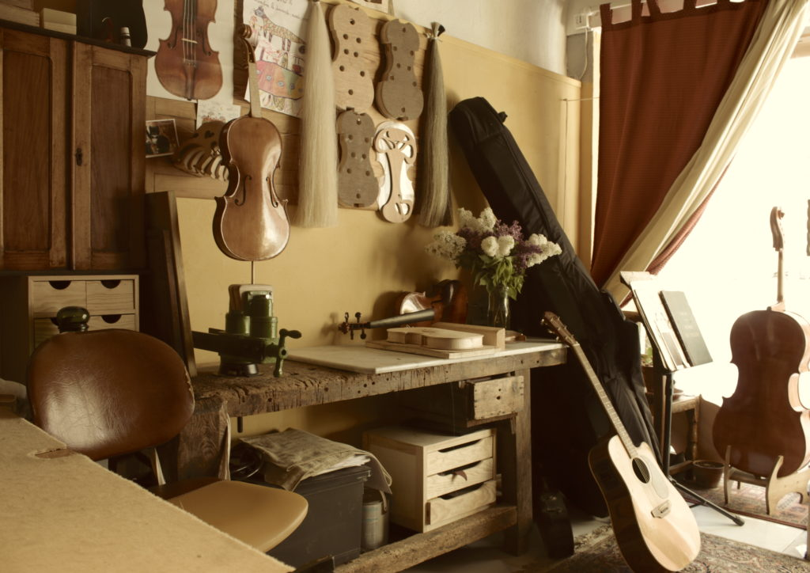
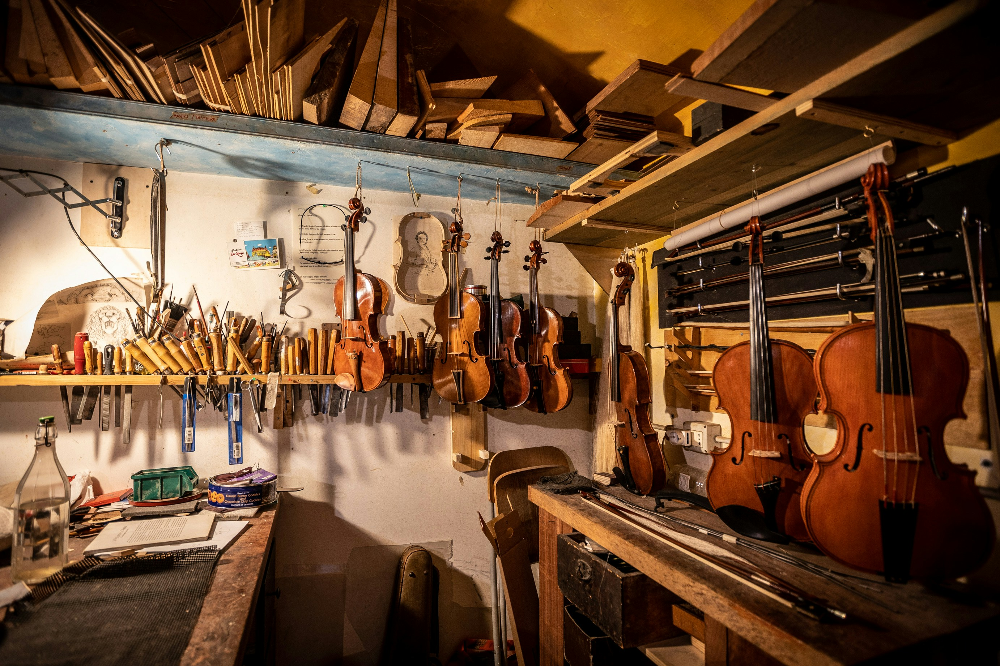

Atelier
Bruno Braz Guaragna é luthier, descendente de luthiers italianos que imigraram para o Brasil no início do século XX e, com o conhecimento trazido da Itália, abriram uma das primeiras e mais renomadas fábricas de instrumentos de cordas da época (1920 a 1947) na cidade de Porto Alegre, no Rio Grande do Sul Estes, embora fossem majoritariamente uma “fábrica”, tiveram muito prestígio por um longo período, exemplificado por premiações em exposições nacionais importantes, como a Exposição Internacional do Centenário do Rio de Janeiro em 1922. Concertistas e músicos diversos utilizavam instrumentos 'Guaragna' pelo país. Um deles, muito conhecido e referência no meio do violão, foi Levino Albano da Conceição, icônico violonista e concertista cego, ainda hoje lembrado por violonistas de todo o país. Ele usava um violão 'Casa Guaragna' em 1924, construído e assinado por Roque Guaragna, o principal luthier e fundador da fábrica. *(Levino foi professor de Dilermando Reis, outro famoso violonista e compositor popular brasileiro.)
Bruno Guaragna é Ítalo-brasileiro, e, atualmente o único descendente vivo da família, que dá continuidade ao DNA dessa tradição ancestral, construindo violões (clássicos/populares) de forma artesanal, profissional e autônoma, dando sequência assim, à uma história quase esquecida e perdida, e que, por um mistério da vida, “ressurge” oportunizando-o honrar toda essa história com muito amor e alma. O intuito, é de levar para o maior número de pessoas seus violões feitos à mão, como forma de agregar e contribuir culturalmente à arte em geral, com uma ferramenta de qualidade e alto nível para todo(a) aquele(a) que puder se expressar em sua totalidade, ocasionando alegria, afeto e momentos profundos e marcantes através da única linguagem universal existente: A música. **Em 2023, Bruno lançou o álbum “Chitarra Guaragna-Uma arte Centenária”. Uma homenagem à seus antepassados Luthiers e toda essa história: O disco vol.1, conta com 13 faixas, gravado por diferentes artistas de diversos estilos musicais, usando diferentes violões de 6 e 7 cordas, construídos por Bruno Guaragna.

